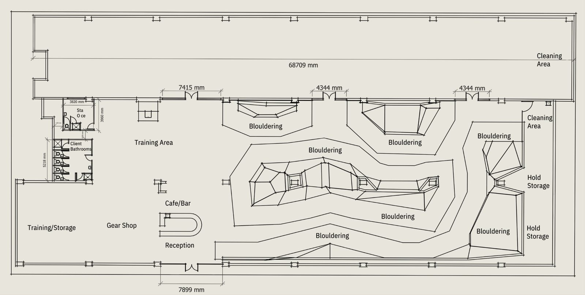
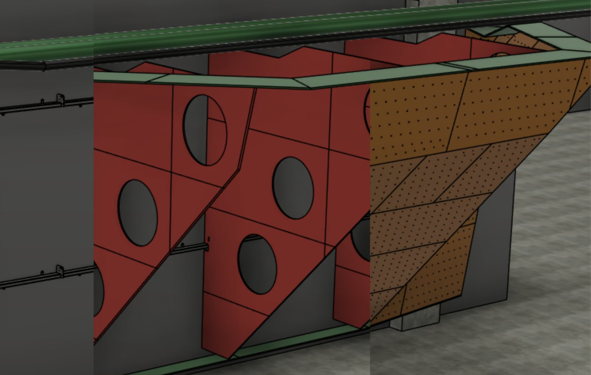
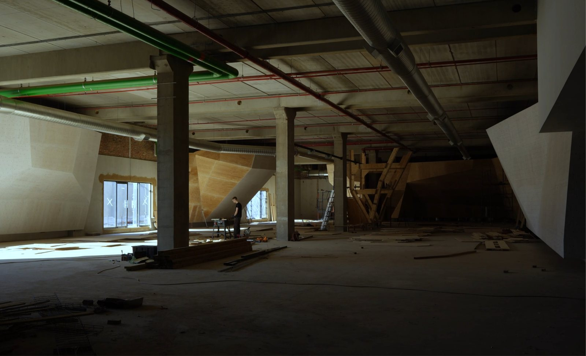

Bloc 11 Climbing Gym · Johannesburg · 2025
Bloc 11 Fourways
Sole designer. Site selection to wall completion.
An empty retail shell to a 900 m² climbing gym in under three months.
The brief
Develop the most effective methods for designing, manufacturing and assembling a bouldering gym in the shortest possible timeframe, while maintaining quality and safety with the resources available.
- Client
- Bloc 11 Climbing & Fitness
- Project type
- Commissioned build
- Date
- Feb – July 2025
- My scope
- Walls, structure, and floor plan. Not general fit-out.
- Tools
- Shaper 3D · Gravity Sketch · Fusion · CNC · SketchUp
- Materials
- Concrete · Steel · Plywood · Timber
m² gym
Plywood sheets
Teams trained
Months
01AUse



Floor plan, main climbing hall
01A
Use
Bouldering is climbing without ropes, on walls low enough to jump off onto foam matting.
The walls serve two groups with different needs. Climbers choose a gym on variety, so the design needed as many angles and configurations as the space allowed. Route setters need maximum unobstructed surface for volumes and screw-on holds, since that determines the quality of routes they can set, plus simple open structure behind the wall so damaged T-nuts are easy to reach.
The layout leaves trolley paths through the matting, connecting storage at the back of the gym to the floor.
01B
Form
A bouldering gym mimics the boulders and caves you find outside. The objective is the balance between face variance and simplicity.
I hand-measured the retail shell and rebuilt it in CAD, then ideated at full scale in VR through Gravity Sketch, sketching structural forms freely and verifying them against the accurate model of the space. Once the managing director and I agreed on the rough shapes, I moved into CAD to model dimensionally accurate surfaces and build the structure off those.
01C
Structure
Two sections of heavy steel tubing span the concrete pillars and fix to the brick walls, forming the foundation. Plywood spines mount off them on custom laser-cut plates that allow micro-adjustment during assembly.
That answered the previous build, where panels hung off steel arms with no fixed plane to index from, compounding errors along a long run of wall.
Lipped top and bottom edges do three jobs: alignment guides, lateral stability, and a splinter-free hold where climbers grab over the top.
The system was intentionally light, so once a section stood we could see where reinforcement was actually needed and add it there. Less material, faster assembly.
01D
Build
I produced every production file on the job: floor plans, concept designs, CAD models, CNC cutting files and assembly diagrams, plus supplier and material sourcing. I trained the CNC operator before the venue was settled.
The managing director ran construction alongside me from a traditional woodworking background while I set the assembly method and corrected on site, continuing to cut CNC files for batches shipped from their Cape Town workshop.
When the budget tightened, I changed the spines from solid sheets with access holes to interlocking strips reinforced with timber. Less material, same system.